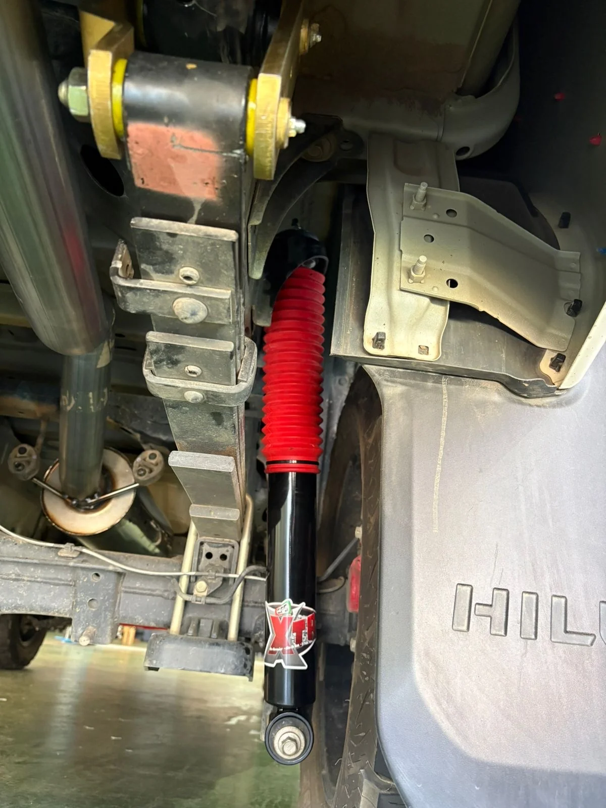
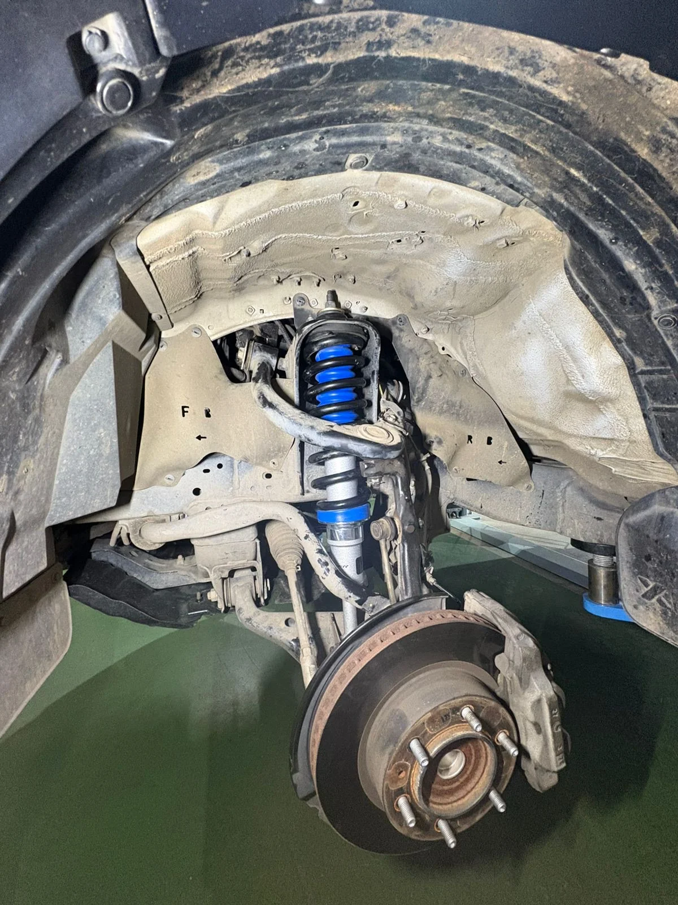
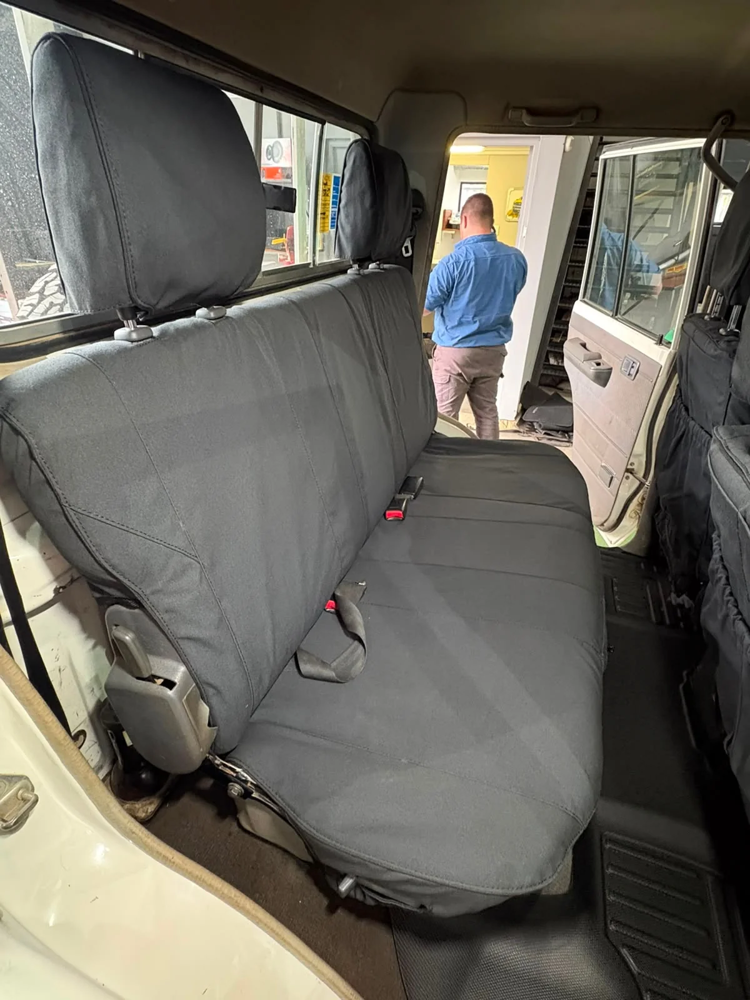

Suspension / EFS
EFS suspension fitment
A look inside the workshop during an EFS suspension installation.
Fitment details
EFS suspension components, from preparation on the workshop floor to fitment on the vehicle.

Real vehicles. Practical upgrades.
A few of the jobs that keep our workshop moving.
5 jobs
A look inside the workshop during an EFS suspension installation.
EFS suspension components, from preparation on the workshop floor to fitment on the vehicle.

Extra carrying space for an Africa trip, with a Predator roof rack and pre-trip attention.
Roof-rack fitment, a suspension check and investigation of a rattle before the next trip.
See the original post ↗Workshop images from a Profender suspension installation.
A closer look at the suspension components fitted to the vehicle.

Tougher seat covers and moulded carpets for a hard-working Land Cruiser.
Practical protection for the seats and floors, with front and rear interior fitment.

See the original post ↗A close-up of Tough Dog fitment, straight from the workshop.
Part of our suspension and fitment work. Speak to the team about a setup for your own vehicle.
Tell us what you drive.
Tell us where you want to take it.